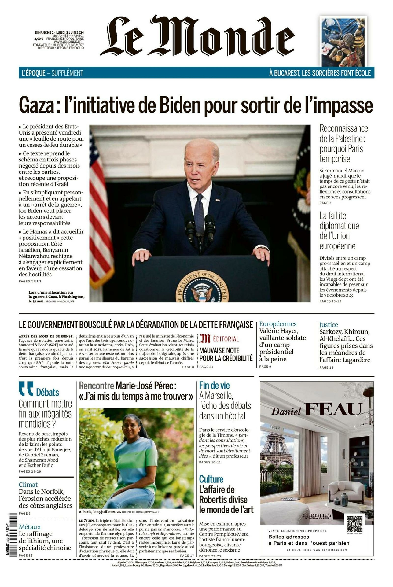
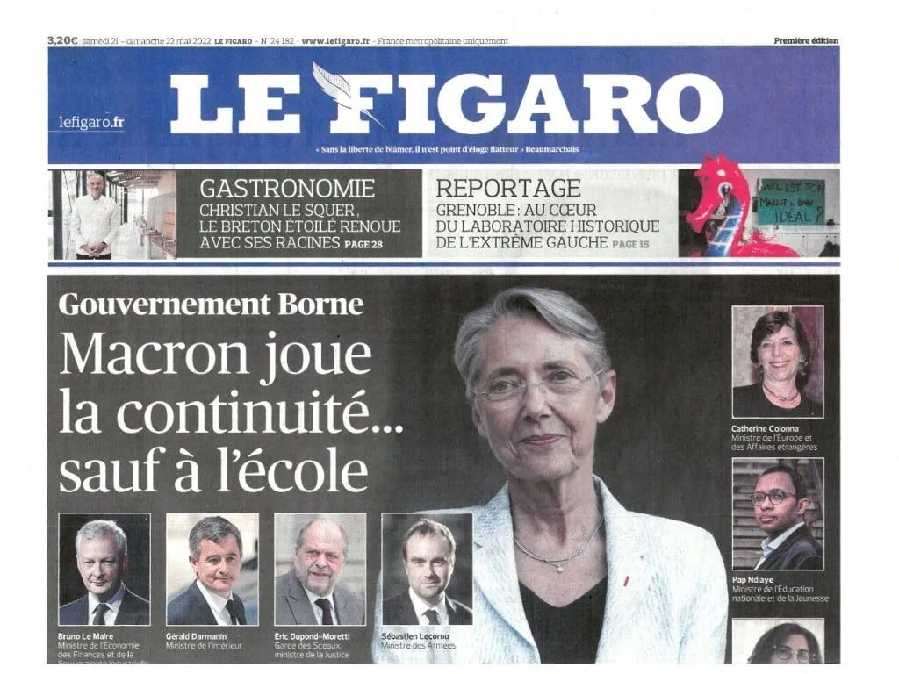
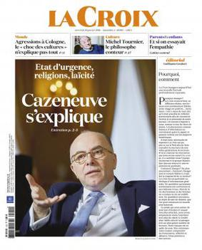
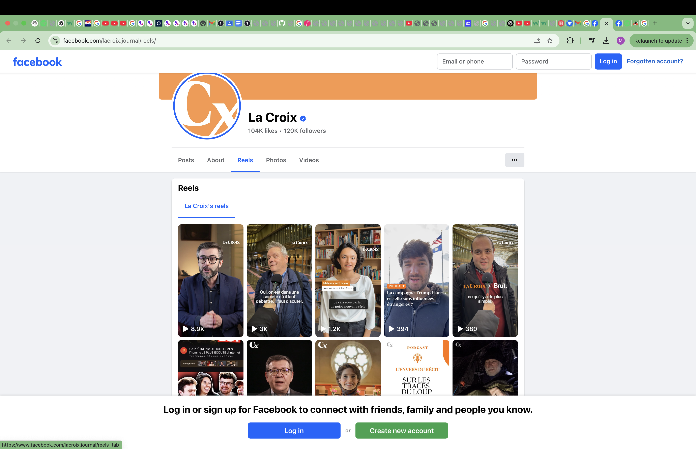

French B1 Media
News Sources

Le Monde is one of France's most comprehensive and respect newspapers, covering both international and national news. It regularly tackles topics like politics, culture, economics and social issues.
Characteristics: Complex, Advanced Sentence Structures, Higher-Level Vocabulary, Slightly Dense Articles
Skills Improved: Grammar, Reading, Writing, Cultural Awareness
Tip!: Their L'Heure de Monde Spotify Podcast is the perfect French recap for Global News! (And personally, it worked wonderfully for my listening, speaking and pronounciation!) Extra - pair this with the English Le Monde, for corroboration!

Libération is a left-wing, engaging and conversational newspaper that touches on a wide range of topics from social issues, and global news.
Characteristics: Conversational Language, Accessible Tone, Complex Sentence Structures, Cultural Awareness
Skills Improved: Reading, Cultural Awareness

Le Figaro is a center-right newspaper. Providing coverage on everything from politics to culture to international affairs, approach its nuanced political alignment by comparing it against to Le Monde's neutral alignment.
Characteristics: Formal and Political/Economical Vocabulary, Complex Sentence Structure
Skills Improved: Reading, Cultural Awareness

L'Humanité has a left-wing and communist editorial line, focusing on politcal, economical and social issues. It often takes a critical stance on capitalism and neoliberal policies. Explore different extreme French idealogies and politics, with papers like L'Humanité.
Characteristics: Political Vocabulary, Medium Sentence Structure
Skills Improved: Reading, Writing, Cultural Awareness
Mediapart is an independent, subscriber-funded investigative newspaper known for in-depth reports and exposés on politics, economics, and social issues. It challenges government policies and corporate interests, making it a key investigative journalism in France. Explore critical and analytical perspectives with Mediapart.
Characteristics: Complex Sentence Structure
Skills Improved: Reading, Cultural Awareness

La Croix is a moderate Catholic newspaper which focuses on social, ethical and religious issues. Known for a balanced approach to news, especially for family, education, health and intl relations.
Characteristics: Clear Language, Social and Moral Vocabulary
Skills Improved: Reading, Writing, Cultural Awareness

What is the DELF? Not sure what your DELF level is? Click here to find out!
Tip! Use Collins' French-English Dictionary to refer to words you don't know!